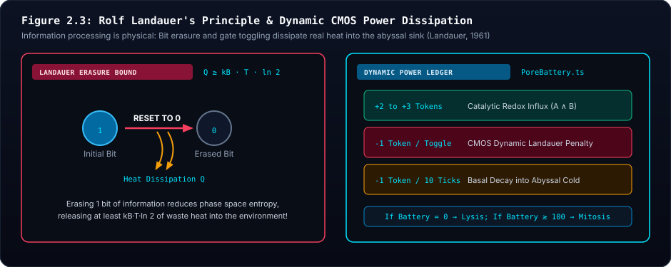
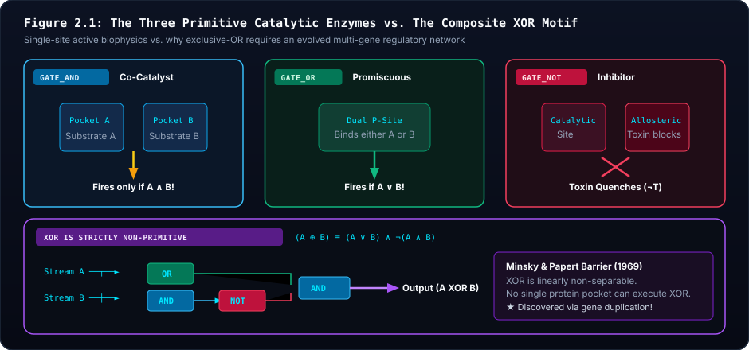

🧪 Practicums 1–5: Hands-On Student Laboratory Manual
Interactive In-Silico Biophysics, Paleontology Autopsies, and Formative Senior Assessments
Laboratory Overview & Classroom Instructions
This laboratory manual provides five rigorous, step-by-step practicums using the interactive Siliquarium application. Each practicum is designed for a standard 90-minute advanced high school block period or a 3-hour undergraduate laboratory session.
Software Access & Prerequisites
- Application URL: Open
docs/index.htmlor run the local development server vianpm run dev(http://localhost:3000). - Zero Installation Mandate: Siliquarium runs 100% in any modern web browser with WebGL enabled.
- Required Hardware: Standard laptop or desktop computer with mouse or trackpad.
🔬 Lab 1: Exploring the Hydrothermal Seafloor & Circuit Microscope
1. Learning Objectives
- Navigate a 3D abyssal seamount and differentiate between basalt rock substrates (
PoreMedium.ROCK_SUBSTRATE) and the permeable water column (PoreMedium.AQUEOUS_FLUID). - Operate the Circuit Microscope to inspect real-time logic gate toggles, pulsing electron wires, and battery token counters.
- Validate Howard Pattee's Epistemic Cut by verifying that rate-independent genome tapes in the Safe do not mutate during rate-dependent metabolic gate switching in the Workshop.
2. Theoretical Pre-Lab Preparation
Review Unit 1, Section 5. In your notebook, define Pattee's Epistemic Cut and explain why living systems must separate rate-independent symbolic hereditary code from rate-dependent physical metabolic execution.
3. Step-by-Step Laboratory Procedure
- Launch Siliquarium. In the top navigation header, verify that the simulation initialized with Seed
#42. - 3D Orbit Camera Practice:
- Rotate: Left-click and drag to orbit around the central hydrothermal caldera.
- Pan: Right-click and drag (or two-finger drag) to move across basalt shelves and volcanic ridges.
- Zoom: Scroll wheel to zoom from a bird's-eye view of the caldera down to an individual hexagonal pore.
- Locate the central hydrothermal caldera nozzle at coordinates $(0, 0, 0)$. Notice the glowing thermal convection plume rising vertically into the water column.

Field Guide Callout: Reading the 3D Seamount & Lattice States
- Rock Bedrock ($z=0$): Dark hexagonal basalt matrix providing physical cavities.
- Water Column ($z \ge 1$): Permeable cyan-tinted hexes allowing thermal plume convection and spore drift.
- Silicoid Pores: Color-coded by state: Green (Active Homeostatic Silicoids), Amber (Starving cells $E < 20$), Grey (Mineralizing Carcasses).
- Click on an occupied hexagonal pore immediately adjacent to the vent nozzle (e.g., coordinates $(1, 0, 0)$ or $(0, 1, 0)$).
- Observe the Electric Neon Targeting Reticle lock onto the selected pore.
- Open the Circuit Microscope panel on the right side of the screen. Identify the three core anatomical compartments:
- The Genome Safe Ribbon: The 60-bit inert tape displayed across the top.
- The Active Workshop Netlist: The physical logic gates (
AND,OR,NOT,BUF) and pulsing signal wires. - The Battery Gauge: Real-time token counter ($0..100$) tracking chemiosmotic electrochemical charge accumulation (Mitchell 1961)[2].

Field Guide Callout: Anatomy of the Circuit Microscope
- Top Ribbon (Genome Safe): Displays the 10 codons (60 bits total) of inert genetic instructions. Notice zero electrical activity touches this tape.
- Central Workshop Canvas: The translated 2D CMOS logic circuit showing logic gates (
AND,NOT,OR) connected to input porins ($A$, $B$, $T$) and output sinks ($E$, $M$, Septum). - Telemetry Bar: Displays Real-Time Battery ($E$), Mineral Reserves ($M$), Lineage Generation, and Age.
- Click the Pause button (
❚❚) on the bottom transport bar. Use the Step Forward button (Step ►) to advance the simulation clock cycle by clock cycle ($\pm 1$ tick). - Observe how gate pins light up when vent pulses enter the pore, and track whether the battery charges or discharges.

Field Guide Callout: In-Situ Micro-Pore Inspection
- Zooming directly into an occupied basalt pore reveals the physical gate chips rendered in-situ on the seafloor floor. Wires glow when signals propagate, visually uniting the 3D physical world with the 2D schematic microscope.
4. Data Collection Table
Select three distinct occupied pores at varying distances from the vent nozzle and record their physiological metrics:
| Specimen Pore $(q, r, z)$ | Distance from Nozzle | Active Gate Types | Battery Level ($E$) | Matter Reserve ($M$) | Generation | Age (Ticks) |
|---|---|---|---|---|---|---|
| Specimen 1 | ||||||
| Specimen 2 | ||||||
| Specimen 3 |
5. Post-Lab Synthesis Questions
- Compare Specimen 1 (near vent) with Specimen 3 (far from vent). How does distance from the hydrothermal nozzle affect energy accumulation and division frequency?
- Did any bits on the 60-bit genome tape change while the cell was toggling gates? Why is this separation essential for evolutionary stability?
⚡ Lab 2: Observing Landauer Power Dissipation & Metabolic Starvation
1. Learning Objectives
- Quantify dynamic Landauer switching dissipation[1] ($1$ token per gate toggle) versus basal maintenance decay ($1$ token every 10 ticks).
- Demonstrate that computation is not free: show that excessive, uncoordinated gate switching causes rapid metabolic starvation.
- Verify the First Law of Thermodynamics ($\Delta E_{\text{universe}} = 0.000$) using the Thermodynamic Ledger.
2. Theoretical Pre-Lab Preparation
Review Unit 2, Section 5. Write the algebraic formula for Rolf Landauer's thermodynamic bound of information erasure. Explain why an organism cannot evolve an infinitely large brain in a resource-limited environment.
3. Step-by-Step Laboratory Procedure
- Reset the simulation. Open the Lab Flyout Drawer by clicking the gear icon (
⚙️) in the top navigation bar. - In the Lab Flyout, set the Primordial Soup Density slider to
10%and click "Seed Soup". - Pause the simulation at Tick 1. Click through several newly seeded pores until you find a cell with 3 or more active logic gates.
- Note its starting battery level (typically $50$ or $60$ tokens).
- Advance the simulation tick-by-tick for 15 ticks. For each tick, record:
- Vent Stream Inputs ($A$, $B$, $T$)
- Number of logic gates that switched state ($0 \to 1$ or $1 \to 0$)
- Catalytic yield added to battery
- Net battery change
- Identify an uncoordinated cell that fails to capture catalytic yield. Watch its battery steadily drain toward zero.
- Observe the moment of lysis: when the battery reaches $0$, note how the active cell transforms into a Carcass Pore (
PoreState.CARCASS), retaining unspent tokens and mineral mass for neighboring scavengers. - Inspect the Thermodynamic Ledger HUD badge at the top right:
$$\Delta E_{\text{universe}} = \sum E_{\text{in}} - \sum E_{\text{stored}} - \sum E_{\text{dissipated}} = 0.000$$

Field Guide Callout: Reading the Thermodynamic Ledger
- Note the three ledger columns: Influx ($+3$), Dissipation ($-1$ per gate toggle), and Basal Leak ($-1$ per 10 ticks).
- Observe how uncoordinated circuits dissipate their battery to zero, triggering immediate lysis into a carcass.
4. Data Collection Table
| Tick | Stream A | Stream B | Gate Switches | Landauer Burn ($E_L$) | Catalytic Yield ($E_C$) | Basal Leak ($E_{\text{leak}}$) | Net Battery ($E$) |
|---|---|---|---|---|---|---|---|
| 1 | |||||||
| 2 | |||||||
| 3 | |||||||
| 4 | |||||||
| 5 |
5. Post-Lab Synthesis Questions
- If an organism mutates 4 additional
BUF(buffer) gates that toggle constantly without contributing to catalytic yield, what is the thermodynamic consequence on its reproductive fitness? - How does the persistence of carcass detritus create an ecological opportunity for detritivores?
🌊 Lab 3: Tracking Phenotypic Adaptation to Vent Chemistry
1. Learning Objectives
- Observe natural selection favoring catalytic
ANDenzymes that resonate with complementary vent pulses. - Investigate the selective advantage of allosteric inhibitor
NOTgates during periodic toxin ($T$) pulses. - Map decoded 6-bit codons from the genome tape to physical circuit netlists using the Codon Table and in-situ network motif analysis (Alon 2019)[4].
2. Theoretical Pre-Lab Preparation
Review Unit 2, Section 2. Explain why a cell with genotype expressing (A AND B) AND (NOT T) will outcompete a simple A AND B cell in a toxic vent regime.
3. Step-by-Step Laboratory Procedure
- Initialize a fresh simulation with World Seed
#101and Soup Density25%. - Let the simulation run uninhibited at normal speed for $500$ ticks.
- Observe the HUD telemetry ticker as the vent cycles through its multi-scale rhythms:
- High-flow fuel bursts (Streams $A=1, B=1$)
- Low-flow resting states
- Acidic poison bursts (Toxin $T=1$, corroding unshielded cells by $-5$ tokens)
- At Tick 500, pause the simulation. Inspect the most densely populated cluster of cells around the caldera.
- Select the oldest living cell (highest Age metric in HUD).
- In the Circuit Microscope, translate its 60-bit genome tape into codons using
CodonTable.ts: - Group the 60 bits into ten 6-bit codons:
[Bits 0-5],[Bits 6-11], ...,[Bits 54-59]. - Identify whether the cell possesses
PORIN_TOXIN_Tcoupled to an inhibitoryGATE_NOT.

Field Guide Callout: Codons to Catalytic Gates
- Match your translated codon list against the three primitive enzymatic pockets shown above.
- Verify whether an inhibitory
GATE_NOTis wired downstream ofPORIN_TOXIN_Tto protect against acidic bursts.
- Compare this adapted specimen with a peripheral cell that died or has a low battery.
4. Genome Codon Translation Worksheet
| Codon Index | 6-Bit Bitstring | Codon Name | Biophysical Functional Class | Active in Workshop? |
|---|---|---|---|---|
| 0 | ||||
| 1 | ||||
| 2 | ||||
| 3 | ||||
| 4 |
5. Post-Lab Synthesis Questions
- Why did the toxin pulses purge unshielded organisms even if their
ANDgates were highly efficient? - Did the surviving organisms "know" the toxin was coming, or did natural selection act as a blind sieve? Explain using the concept of autopoiesis.
🌋 Lab 4: God-Suite Perturbations: Thermal Surges, Extinction Pulses, & Lineage Recovery
1. Learning Objectives
- Apply ecological disturbances using the interactive God-Suite controls in
LabFlyout.ts. - Measure the impact of catastrophic local extinction pulses on the Shannon Diversity Index ($H$).
- Document secondary ecological succession and trans-ridge colonization via pelagic spore dispersal.
2. Theoretical Pre-Lab Preparation
Review Unit 4, Section 6. Define the Shannon Diversity Index ($H$). What happens to $H$ when a single dominant clade monopolizes an entire habitat? What happens to $H$ immediately after an extinction pulse?
3. Step-by-Step Laboratory Procedure
- Run a simulation until Tick 1,000, allowing a dominant clade to expand across the lower benthic terrace.
- Note the baseline metrics in the HUD:
- Living Cells Count ($N_{\text{living}}$)
- Active Clades Count ($K$)
- Shannon Diversity Index ($H$)
- Maximum Generation
- Open the Lab Flyout (
⚙️). Locate the "God-Suite Interventions" section. - Thermal Surge Pulse:
- Click "🔥 Thermal Surge Pulse" (+200 tokens injected into the central plume).
- Observe the immediate metabolic boom: cells adjacent to the caldera rapidly hit $100$ tokens and trigger a wave of binary fissions.

Field Guide Callout: Operating the God-Suite Drawer
- The Lab Flyout drawer slides out from the left edge.
- Use the Thermal Surge Pulse (+200 tokens) to induce localized explosive division.
- Use the Extinction Pulse to wipe out dominant clades and trigger ecological succession.
- Catastrophic Extinction Pulse:
- Select the center of the dominant monoculture colony.
- Click "💥 Local Extinction Pulse" (clearing living cells in radius $r=2$).
- Watch the selected quadrant collapse into carcass rubble.
- Record the immediate collapse of $H$ and $N_{\text{living}}$.

Field Guide Callout: Post-Extinction Collapse & Rubble
- Notice the shockwave of red thermal dissipation and the sudden formation of grey carcass rubble.
- Watch the Shannon Diversity Index ($H$) plummet in the telemetry HUD as monocultures collapse.
- Do not reset. Let the simulation run for $300$ ticks and watch secondary ecological succession:
- Observe whether dormant spores drifting in the water column land on the cleared rock cavities.
- Note which clade re-colonizes the empty territory.
4. Disturbance & Succession Log
| Experimental Phase | Tick | Living Count | Clades Count ($K$) | Shannon Diversity ($H$) | Dominant Clade ID |
|---|---|---|---|---|---|
| Pre-Disturbance Baseline | |||||
| Post-Thermal Surge (+50 ticks) | |||||
| Post-Extinction Pulse (+10 ticks) | |||||
| Succession Recovery (+200 ticks) |
5. Post-Lab Synthesis Questions
- Did the post-extinction habitat return to the exact same genetic state as before the pulse? Why or why not?
- How did pelagic spores drifting in the permeable fluid column prevent total extinction of the lineage?
🦕 Lab 5: Lenski Long-Term Evolution Experiment (LTEE) & Evolutionary Flight Recorder Autopsy
1. Learning Objectives
- Conduct a digital analogue of Richard Lenski's Long-Term Evolution Experiment (LTEE) (Lenski et al. 1991)[3].
- Trace an organism's ancestral lineage back to Generation 0 using
EvolutionaryFlightRecorder.ts. - Perform a counterfactual single-bit autopsy using
FossilFreezer.tsto isolate the exact point mutation that assembled a novel network motif. - Mathematically prove whether two lineages sharing a network motif represent Homology or Homoplasy / Convergent Evolution.
2. Theoretical Pre-Lab Preparation
Review Unit 4, Section 5. Review Richard Lenski's discovery of the $Cit^+$ trait in E. coli at Generation 31,500. Explain why frozen fossil ledgers are essential for proving historical contingency.
3. Step-by-Step Laboratory Procedure
- Initialize the simulation with World Seed
#2026and let it run to Tick 2,000. - Monitor the Paleontology HUD Alerts. When a milestone alert triggers (e.g., "BISTABLE MEMORY LATCH FORMED" or "RING OSCILLATOR DISCOVERED"), immediately pause the simulation.
- Click the notification alert or the glowing neon pore on the seamount.
- Open the Milestone Modal / Evolutionary Autopsy Inspector:
- Inspect the Solution-Space Hamming Trajectory graph:
$$d_H(\text{Lineage}) = \sum_{i=0}^{k-1} \text{popcount}(G_i \oplus G_{i+1})$$
- Observe the color-coded edges:
- Blue Edges: Kimura Neutral Drift ($d_H > 0$, fitness invariant).
- Green Edges: Positive Selection (upward jump in metabolic efficiency).
- Yellow Edges: Duplication / Intron Expansion.
- In the Single-Bit Autopsy Panel, identify:
- Parent Tape (Generation $N-1$)
- Child Tape (Generation $N$)
- The exact inverted bit index ($0..59$)
- The codon change (e.g.,
INTRON_SILENT$\to$GATE_NOT) - Convergent Evolution Audit:
- Scan the seamount for a second cell in a different clade exhibiting the same motif.
- Run the automated Least Common Ancestor (LCA) query.
- Check the audit verdict: does it declare HOMOLOGY or HOMOPLASY?

Field Guide Callout: Reading the Phylogenetic Audit
- Follow the Least Common Ancestor (LCA) decision rule in Figure L5.1.
- If the LCA possessed the motif, the verdict is HOMOLOGY. If the LCA lacked the motif, the verdict is HOMOPLASY (Convergent Evolution).
4. Evolutionary Autopsy Record Sheet
| Autopsy Dimension | Diagnostic Field | Student Laboratory Measurement |
|---|---|---|
| Specimen Identification | Specimen ID & Milestone | ______________________ \| ______________________ |
| Spatial Lineage | Generation & Pore $(q, r, z)$ | Gen: _______ \| Coordinates: ( __, __, __ ) |
| Ancestral Hamming Trajectory | Total Generations & Cumulative $d_H$ | Generations: _____ \| Hamming Traverse: _____ bits |
| Neutral Drift Fraction | Blue Edges (Kimura Drift) | _____ neutral transitions |
| Single-Bit Mutation | Inverted Bit Index & Codon Index | Bit: ____ (0..59) \| Codon: ____ (0..9) |
| Allelic Transition | Parent Codon $\to$ Child Codon | [ _ _ _ _ _ _ ] $\to$ [ _ _ _ _ _ _ ] |
| Biophysical Impact | Functional Consequence | ________________________________________________ |
| LCA Audit | Least Common Ancestor ID & Gen | LCA ID: ______________ \| Gen: _____ |
| LCA Trait Check | Did LCA possess the motif? | [ YES / NO ] |
| Evolutionary Verdict | Phylogenetic Classification | [ HOMOLOGY / HOMOPLASY (CONVERGENT) ] |
5. Post-Lab Synthesis Questions
- How does the existence of neutral introns facilitate the discovery of complex motifs like the bistable latch or half-adder?
- If your audit returned a verdict of Homoplasy, explain how two completely isolated lineages on opposite sides of the seamount converged on the exact same circuit wiring.
9. Socratic Discussion Seminar Prompts
Seminar 1: The Physics of Information & The Epistemic Cut
"Erwin Schrödinger famously stated in 1944 that living organisms feed on 'negative entropy'—they preserve their internal order by continually dissipating entropy into their surroundings. Howard Pattee later argued that life is unique in physical reality because it is governed by symbolic codes. If a genetic code is made of physical matter, why must it be treated as rate-independent? Could life exist without an Epistemic Cut?"
Seminar 2: Is Evolution an Optimization Algorithm?
"In computer science, algorithms are evaluated by how quickly they converge to a global optimum. In natural evolution, is there an optimum? If an organism evolves an extraordinarily complex logic network that burns 50 tokens per tick, why might natural selection favor a 'stupid' organism consisting of a single AND gate? What does this teach us about the difference between engineering and biology?"
Seminar 3: Historical Contingency vs. Determinism
"Stephen Jay Gould famously asked: if we could 'replay the tape of life' from the beginning, would anything look the same? In Richard Lenski's LTEE, only one out of twelve lineages evolved citrate metabolism, requiring a specific pre-adaptation. In Siliquarium, if we run two simulations with the exact same starting seed, but introduce a single bit-flip perturbation at Tick 100, what will happen to the macro-evolutionary trajectory? Is convergence inevitable, or is history hostage to contingency?"
Seminar 4: Richard Dawkins' Genetic Book of the Dead & The Environmental Fountainhead
"In 'The Genetic Book of the Dead' (2024)[5], Richard Dawkins proposes that a genome is not an author, but an inverse parchment written by the environment. Consider a Siliquarium organism whose genome has evolved an SR bistable latch that triggers nutrient intake only when Stream B arrives after Stream A. Does the silicoid 'know' the vent's rhythm? Where did this information originate? Mathematically formulate how the mortality of uncoordinated ancestors acts as the physical communication channel (Kimura, 1961; Adami, 2000)[6] transferring bits from the hydrothermal plume into the 60-bit safe."
10. Formative Diagnostic Assessment Suite
Section A: Conceptual & Biophysical Foundations (Multiple Choice)
1. Why are microscopic rock pores in alkaline hydrothermal vents considered superior to open surface waters for prebiotic abiogenesis?
A) Surface waters were too cold for chemical reactions to occur.
B) Rock pores prevent the Dilution Catastrophe by concentrating catalytic reactants in microscopic volumes.
C) Surface waters completely lacked hydrogen and carbon dioxide.
D) Rock pores provided active lipid membranes before enzymes evolved.
Answer: B. Rationale: The Dilution Catastrophe in open water lowers reactant concentrations toward zero. Inorganic basalt cavities act as nature's first compartments.
2. According to Rolf Landauer and modern thermodynamics of computation, why must a living digital cell pay an energy penalty when switching a logic gate?
A) Gate transitions change electrical potential, dissipating a minimum of $k_B T \ln 2$ heat into the thermal sink.
B) The simulation engine penalizes complex organisms to keep frame rates high.
C) Logic gates physically degrade and must be rebuilt each tick.
D) Energy is only consumed when an arithmetic addition is performed.
Answer: A. Rationale: Landauer's principle proves that information erasure and physical switching incur an irreversible entropic dissipation of at least $k_B T \ln 2$.
3. In the Siliquarium codon table, what biological regulatory mechanism is represented by a GATE_NOT logic gate?
A) Co-substrate redox catalysis.
B) An allosteric competitive inhibitor or transcriptional repressor protein.
C) A passive ion channel allowing unregulated nutrient entry.
D) A cleavage furrow splitting the cell membrane.
Answer: B. Rationale: In molecular biology, a repressor inverts transcription: when the repressor is present ($1$), gene expression is blocked ($0$).
4. Two organisms on opposite sides of the seamount possess isomorphic Bistable Memory Latches with identical Weisfeiler-Lehman hashes. The Evolutionary Flight Recorder traces their ancestry to a Least Common Ancestor that possessed only combinational AND gates. What is the formal evolutionary classification of this shared trait?
A) Homology
B) Synapomorphy
C) Homoplasy (Convergent Evolution)
D) Artificial Selection
Answer: C. Rationale: Because the Least Common Ancestor lacked the motif, both lineages discovered the circuit independently, which defines homoplasy / convergent evolution.
Section B: Quantitative Free-Response Problems
Problem 1: Metabolic Energy Budgeting & Starvation Thresholds
A protocell in Pore $(2, -1, 0)$ contains 3 active logic gates:
- Gate 1:
GATE_ANDwired to Stream A and Stream B (Reaction Yield: $+3$ tokens). - Gate 2:
GATE_BUFwired to Gate 1 output. - Gate 3:
GATE_NOTwired to Gate 2 output.
The hydrothermal vent pulses Stream A and Stream B synchronously ($A=1, B=1$) once every 5 ticks. On all other ticks, $A=0$ and $B=0$. Toxin $T$ is inactive ($T=0$).
- Toggle switching cost: $\kappa = 1$ token per gate transition.
- Basal maintenance leak: $E_{\text{leak}} = 1$ token dissipated every 10 ticks.
- Starting battery: $E_0 = 40$ tokens. Maximum capacity: $E_{\text{cap}} = 100$ tokens.
Questions:
- Calculate the total Landauer toggle energy dissipated by this circuit over a complete 5-tick vent cycle (Ticks 0 through 4).
- Calculate the net battery balance $\Delta E_{\text{cycle}}$ across the 5-tick cycle.
- Will this organism reach the division threshold ($100$ tokens), maintain homeostasis, or starve to death? Show all calculations.
Worked Solution:
- Tick 0 (Pulse arrives: $A=1, B=1$):
- Gate 1 switches $0 \to 1$ ($1$ toggle). Yields $+3$ tokens.
- Gate 2 switches $0 \to 1$ ($1$ toggle).
- Gate 3 switches $1 \to 0$ ($1$ toggle).
- Landauer burn $= 3$ tokens. Yield $= +3$ tokens. Net change $= 0$.
- Tick 1 (Pulse drops: $A=0, B=0$):
- Gate 1 switches $1 \to 0$ ($1$ toggle). Yield $= 0$.
- Gate 2 switches $1 \to 0$ ($1$ toggle).
- Gate 3 switches $0 \to 1$ ($1$ toggle).
- Landauer burn $= 3$ tokens. Yield $= 0$. Net change $= -3$ tokens.
- Ticks 2, 3, 4 (Idle ticks: inputs remain $0$):
- Gates remain static ($0$ toggles). Landauer burn $= 0$.
- Basal leak: $1$ token every 10 ticks $\implies 0.5$ tokens / 5 ticks.
- Cycle Net Balance:
$$\Delta E_{\text{cycle}} = \Delta E_{\text{yield}} - E_{\text{Landauer}} - E_{\text{leak}} = +3 - (3 + 3) - 0.5 = -3.5 \text{ tokens per 5 ticks}$$
- Conclusion: The organism operates at a persistent net deficit of $-3.5$ tokens every 5 ticks. It will exhaust its 40-token battery within approximately $57$ ticks and undergo starvation lysis!
Problem 2: Weisfeiler-Lehman Topological Invariant Calculation
Given a 3-gate circuit:
- Node 1:
GATE_AND - Node 2:
GATE_NOT - Node 3:
GATE_OR - Directed wires: $(1 \to 2)$, $(2 \to 3)$, $(3 \to 1)$ (A directed 3-node loop).
- Perform Round 0 color initialization.
- Perform Round 1 Weisfeiler-Lehman color refinement, showing the neighbor multiset and signature string for each node.
- Explain why this invariant remains identical even if Node 1 and Node 3 swap positions in the physical array.
Worked Solution:
- Round 0 Colors: $c_1^{(0)} = \text{AND}$, $c_2^{(0)} = \text{NOT}$, $c_3^{(0)} = \text{OR}$.
- Directed Neighborhoods:
- $\mathcal{N}(1) = \{2\}$, $\mathcal{N}(2) = \{3\}$, $\mathcal{N}(3) = \{1\}$.
- Round 1 Signatures:
- Node 1: $\text{AND}:[\text{NOT}]$
- Node 2: $\text{NOT}:[\text{OR}]$
- Node 3: $\text{OR}:[\text{AND}]$
- Applying deterministic hash produces updated color multiset.
- Permutation Invariance: If the gates are re-indexed such that Node 3 is placed first, the neighbor multiset is lexicographically sorted prior to hashing (
SORT(...)). The resulting collection of color hashes across the graph remains identical, yielding the exact same canonical invariant hash.
Problem 3: Calculating Christoph Adami's Genomic Mutual Information $C(X) = I(X; E)$
A hydrothermal environment $E$ has two equally probable states: Fuel Plume Active ($E = 1$, $p=0.5$) and Fuel Plume Inactive ($E = 0$, $p=0.5$).
- Calculate the Shannon entropy of the environment $H(E) = -\sum p(e) \log_2 p(e)$.
- Protocell Alpha possesses an unevolved, random 60-bit genome tape. Its logic gates fire completely at random, uncorrelated with the environment ($P(X=1 \mid E=1) = 0.5$, $P(X=1 \mid E=0) = 0.5$). Calculate the conditional entropy $H(E \mid X_{\text{Alpha}})$ and its physical genomic complexity $C(X_{\text{Alpha}}) = I(X_{\text{Alpha}}; E)$.
- Protocell Beta has evolved a catalytic
GATE_ANDsensor perfectly coupled to the vent plume ($P(X=1 \mid E=1) = 1.0$, $P(X=1 \mid E=0) = 0.0$). Calculate $H(E \mid X_{\text{Beta}})$ and $C(X_{\text{Beta}}) = I(X_{\text{Beta}}; E)$. - According to Adami (2000)[6] and Dawkins (2024)[5], where did Protocell Beta's 1 bit of information originate?
Worked Solution:
- Environmental Entropy:
$$H(E) = -(0.5 \log_2 0.5 + 0.5 \log_2 0.5) = 1.0 \text{ bit}$$
- Protocell Alpha (Random Genome):
- Because $X_{\text{Alpha}}$ is statistically independent of $E$:
$$H(E \mid X_{\text{Alpha}}) = H(E) = 1.0 \text{ bit}$$
- Genomic Complexity / Mutual Information:
$$C(X_{\text{Alpha}}) = I(X_{\text{Alpha}}; E) = H(E) - H(E \mid X_{\text{Alpha}}) = 1.0 - 1.0 = 0.0 \text{ bits}$$
- Conclusion: Even though Alpha possesses 60 physical bits in its Safe, its physical genomic complexity is exactly zero because it contains zero information about its environment!
- Protocell Beta (Evolved Adapted Genome):
- Because $X_{\text{Beta}}$ uniquely determines $E$, the conditional uncertainty of the environment given the genome's state is zero:
$$H(E \mid X_{\text{Beta}}) = 0.0 \text{ bits}$$
- Genomic Complexity / Mutual Information:
$$C(X_{\text{Beta}}) = I(X_{\text{Beta}}; E) = 1.0 - 0.0 = 1.0 \text{ bit}$$
- Epistemological Source:
- The 1 bit of information was not created by mutation. Mutation provided only random bitflips.
- The information was injected from the hydrothermal environment $E$. The death (lysis) of all random variants that fired during inactive ticks ($E=0$) filtered out entropic noise, leaving surviving lineages with a physical mirror of the external world ($C(X) = 1.0$ bit).
References & Foundational Literature
The theoretical assertions, biophysical models, and computer architectural frameworks presented in this volume are grounded in the following seminal peer-reviewed literature. Numbered superscripts throughout the text link directly to these entries.
-
[1]
Landauer, R. (1961). Irreversibility and heat generation in the computing process. IBM Journal of Research and Development, 5(3), 183–191.Landauer Dynamic Switching Dissipation: Laboratory verification of metabolic starvation: idle gates consume 0 tokens; active gate switching dissipates 1 token per toggle.
-
[2]
Mitchell, P. (1961). Coupling of phosphorylation to electron and hydrogen transfer by a chemi-osmotic type of mechanism. Nature, 191(4784), 144–148.Chemiosmotic Proton Motive Force Harvesting: Tracking pore battery charge as cells harvest synthetic hydrothermal fuel streams.
-
[3]
Lenski, R. E., Rose, M. R., Simpson, S. C., & Tadler, S. C. (1991). Long-term experimental evolution in Escherichia coli. I. Adaptation and divergence during 2,000 generations. The American Naturalist, 138(6), 1315–1341.Lenski -80°C Cryogenic Fossil Freezing & Autopsy: Single-bit counterfactual autopsies: freezing ancestors and pinpointing the exact bit mutation that sparked motif emergence.
-
[4]
Alon, U. (2019). An Introduction to Systems Biology: Design Principles of Biological Networks (2nd ed.). CRC Press / Taylor & Francis Group. ISBN: 978-1439837016.In-Situ Circuit Diagnostics & Weisfeiler-Lehman Verification: Using the Circuit Microscope to inspect logic gate netlists and verify topological WL invariants.
-
[5]
Dawkins, R. (2024). The Genetic Book of the Dead: A Darwinian Reverie of Ancestral Worlds. Head of Zeus / Apollo. ISBN: 978-1804548486.The Genetic Book of the Dead: The genome is an inverse description of the ancestral environments that sculpted it; natural selection acts as the communication scribe.
-
[6]
Adami, C., Ofria, C., & Collier, T. C. (2000). Evolution of biological complexity. Proceedings of the National Academy of Sciences, 97(9), 4463–4468.Complexity as Mutual Information: Formal proof that genomic complexity is the mutual information between the genome bitstring and the physical environment: C(X) = I(X; E).